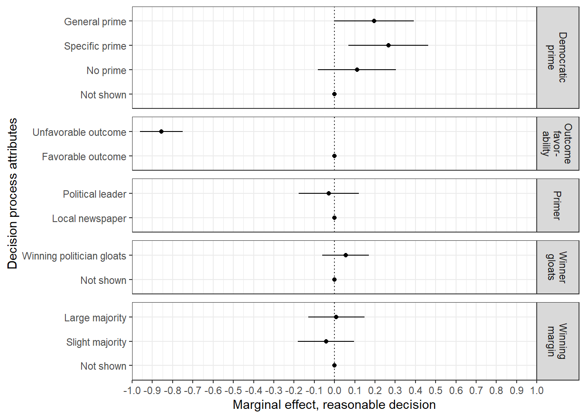
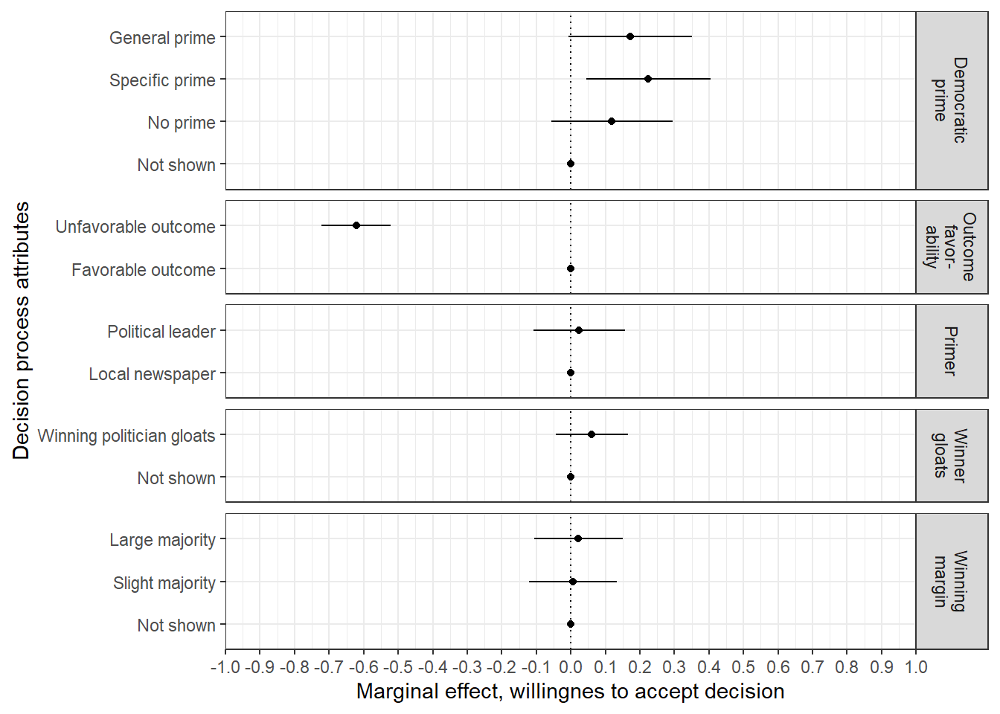
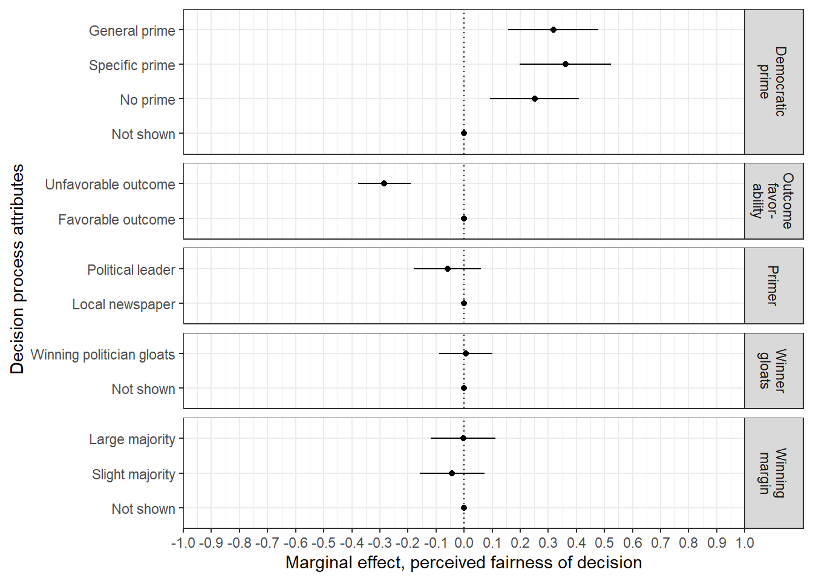

Chapter 16 Worded answer scale
This chapter shows the treatment effects for the answer scale that effects which typically is given to the respondents in the Norwegian Citizen Panel. This scale reads:
- Very fair
- Fair
- Somewhat Fair
- Slightly fair
- Not fair at all
Half of the respondents were asked to answer the post measures of fairness, reasonableness, and willingness to accept the decision with this regular, worded answer scale, while the other half gets an alternative numbered scale in stead (please note that the scales are reversed in all analyses).
if(!require("broom")){install.packages("broom"); library(broom)}
if(!require("haven")){install.packages("haven"); library(haven)}
if(!require("here")){install.packages("here"); library(here)}
if(!require("knitr")){install.packages("knitr"); library(knitr)}
options(kableExtra.latex.load_packages = FALSE)
if(!require("kableExtra")){install.packages("kableExtra"); library(kableExtra)}
if(!require("naniar")){install.packages("naniar"); library(naniar)}
if(!require("tidyverse")){install.packages("tidyverse"); library(tidyverse)}
set.seed(2016)
d <- read_sav("Data/Goodloser-exp3.sav")
knitr::opts_chunk$set(echo = TRUE, knitr.kable.NA = "", cache = FALSE, warning = FALSE)##Prepare data
main_01 <- d %>%
mutate(rsp_id = as.numeric(responseid),
rsp_beg = case_when(r13pad1 == 1 ~ "In favour of ban on begging",
r13pad1 == 2 ~ "Against ban on begging"),
rsp_beg_imp = case_when(r13pad2 %in% 1:2 ~ "Important",
r13pad2 %in% 3:5 ~ "Not important"),
rsp_toll = case_when(r13pad3 == 1 ~ "In favour of road toll increase of diesel cars",
r13pad3 == 2 ~ "Against road toll increase of diesel cars"),
rsp_toll_imp = case_when(r13pad4 %in% 1:2 ~ "Important",
r13pad4 %in% 3:5 ~ "Not important"),
treat_issue = case_when(r13pad5_sak == 1 ~ "Ban on begging",
r13pad5_sak == 2 ~ "Road toll increase of diesel cars"),
treat_outcome = case_when(r13pad5_utfall == 1 ~ "The Yes side won the vote",
r13pad5_utfall == 2 ~ "The No side won the vote"),
treat_outfav = case_when(r13pad5_sak == 1 & r13pad1 == 1 & r13pad5_utfall == 1 ~ "Favorable outcome",
r13pad5_sak == 1 & r13pad1 == 2 & r13pad5_utfall == 2 ~ "Favorable outcome",
r13pad5_sak == 1 & r13pad1 == 1 & r13pad5_utfall == 2 ~ "Unfavorable outcome",
r13pad5_sak == 1 & r13pad1 == 2 & r13pad5_utfall == 1 ~ "Unfavorable outcome",
r13pad5_sak == 2 & r13pad3 == 1 & r13pad5_utfall == 1 ~ "Favorable outcome",
r13pad5_sak == 2 & r13pad3 == 2 & r13pad5_utfall == 2 ~ "Favorable outcome",
r13pad5_sak == 2 & r13pad3 == 1 & r13pad5_utfall == 2 ~ "Unfavorable outcome",
r13pad5_sak == 2 & r13pad3 == 2 & r13pad5_utfall == 1 ~ "Unfavorable outcome"),
treat_winningmargin = case_when(r13pad5_vinnermargin == 1 ~ "Not shown",
r13pad5_vinnermargin == 2 ~ "Slight majority",
r13pad5_vinnermargin == 3 ~ "Large majority"),
treat_winnergloat = case_when(r13pad5_vinner == 1 ~ "Not shown",
r13pad5_vinner == 2 ~ "Winning politician gloats"),
treat_prime = case_when(r13pad5_avsender == 1 ~ "Not shown",
r13pad5_avsender == 2 | r13pad5_avsender == 5 ~ "No prime",
r13pad5_avsender == 3 | r13pad5_avsender == 6 ~ "Specific prime",
r13pad5_avsender == 4 | r13pad5_avsender == 7 ~ "General prime"),
treat_messenger = case_when(r13pad5_avsender %in% 3:4 ~ "Political leader",
r13pad5_avsender %in% 6:7 ~ "Local newspaper"),
post_fair = case_when(r13pad6a == 1 | r13pad6b == 1 ~ 5,
r13pad6a == 2 | r13pad6b == 2 ~ 4,
r13pad6a == 3 | r13pad6b == 3 ~ 3,
r13pad6a == 4 | r13pad6b == 4 ~ 2,
r13pad6a == 5 | r13pad6b == 5 ~ 1),
post_reasonable = case_when(r13pad7a == 1 | r13pad7b == 1 ~ 5,
r13pad7a == 2 | r13pad7b == 2 ~ 4,
r13pad7a == 3 | r13pad7b == 3 ~ 3,
r13pad7a == 4 | r13pad7b == 4 ~ 2,
r13pad7a == 5 | r13pad7b == 5 ~ 1),
post_accept = case_when(r13pad8a == 1 | r13pad8b == 1 ~ 5,
r13pad8a == 2 | r13pad8b == 2 ~ 4,
r13pad8a == 3 | r13pad8b == 3 ~ 3,
r13pad8a == 4 | r13pad8b == 4 ~ 2,
r13pad8a == 5 | r13pad8b == 5 ~ 1),
scale = case_when(r13pad6_ran == 1 ~ "Worded",
r13pad6_ran == 2 ~ "Numbered")
) %>%
replace_with_na_all(condition = ~.x == 98 )%>% #Recode 98 (not asked) as missing
filter(!is.na(r13pad6_ran)) %>% #Remove NA's
## We want the value labels in particular order for the tables and figures.
mutate(treat_winningmargin = lvls_reorder(treat_winningmargin, c(2, 3, 1)),
treat_prime = lvls_reorder(treat_prime, c(3, 2, 4, 1))
)
main_01 <- main_01 %>%
filter(scale == "Worded")##Reasonable decision
## Error in file(filename, "r", encoding = encoding): cannot open the connectionres_main <- main_01 %>%
amce(post_reasonable, treat_outfav, treat_winningmargin, treat_winnergloat, treat_prime, treat_messenger) ## Error in amce(., post_reasonable, treat_outfav, treat_winningmargin, treat_winnergloat, : unused argument (treat_messenger)res_main <- res_main %>%
mutate(
treatment = case_when(treatment == "treat_outfav" ~ "Outcome\nfavor-\nability",
treatment == "treat_winningmargin" ~ "Winning\nmargin",
treatment == "treat_winnergloat" ~ "Winner\ngloats",
treatment == "treat_prime" ~ "Democratic\nprime",
treatment == "treat_messenger" ~ "Primer")
)## Error in eval_tidy(pair$lhs, env = default_env): object 'treatment' not found#Figure
fig_amce <-
res_main %>%
ggplot(aes(x = estimate, y = value)) +
facet_grid(
treatment ~ .,
scales = "free_y",
space = "free_y") +
geom_errorbarh(
aes(xmin = estimate - (2 * std_error),
xmax = estimate + (2 * std_error)),
height = 0) +
geom_point() +
geom_vline(aes(xintercept = 0), linetype = "dotted") +
scale_x_continuous(
limits = c(-1, 1),
breaks = round(seq(-1, 1, .1), 2),
expand = c(0, 0)) +
labs(
x = "Marginal effect, reasonable decision",
y = "Decision process attributes") +
theme_bw() +
theme(plot.margin = unit(c(2, 2, 2, 2), "mm")) +
theme(panel.spacing = unit(0.5, "lines"))
fig_amce## Error: At least one layer must contain all faceting variables: `treatment`.
## * Plot is missing `treatment`
## * Layer 1 is missing `treatment`
## * Layer 2 is missing `treatment`
## * Layer 3 is missing `treatment`
ggsave(
here("output", "figs", "pngs", "fig_wordscale_reasonable.png"),
plot = fig_amce,
width = 5.5, height = 2.75
)## Error: At least one layer must contain all faceting variables: `treatment`.
## * Plot is missing `treatment`
## * Layer 1 is missing `treatment`
## * Layer 2 is missing `treatment`
## * Layer 3 is missing `treatment`## Error in grDevices::dev.off(): QuartzBitmap_Output - unable to open file '/Users/macorg/Documents/GitHub/Goodlosergit/Analysis/Bookdown-goodloser/output/figs/pngs/fig_wordscale_reasonable.png'ggsave(
here("output", "figs", "pdfs", "fig_wordscale_reasonable.pdf"),
plot = fig_amce,
width = 5.5, height = 2.75
)## Error in grDevices::pdf(file = filename, ..., version = version): cannot open file '/Users/macorg/Documents/GitHub/Goodlosergit/Analysis/Bookdown-goodloser/output/figs/pdfs/fig_wordscale_reasonable.pdf'## Error in .f(.x[[i]], ...): object 'value' not foundkable(res_main, booktabs = TRUE, caption = "Average Marginal Component Effects", col.names = linebreak(c("Treatment value", "Estimate", "Std. Error", "t-statistic", "p value"))) %>%
kable_styling(bootstrap_options = c("striped", "hover", "responsive")) %>%
group_rows(index = c("Outcome favorability" = 2, "Winning margin" = 3, "Winner gloating" = 2, "Good loser prime" = 4, "Primer" = 2))## Error in xml_children(kable_tbody)[[i]]: subscript out of bounds##Willingnes to accept
## Error in file(filename, "r", encoding = encoding): cannot open the connectionres_main <- main_01 %>%
amce(post_accept, treat_outfav, treat_winningmargin, treat_winnergloat, treat_prime, treat_messenger) ## Error in amce(., post_accept, treat_outfav, treat_winningmargin, treat_winnergloat, : unused argument (treat_messenger)res_main <- res_main %>%
mutate(
treatment = case_when(treatment == "treat_outfav" ~ "Outcome\nfavor-\nability",
treatment == "treat_winningmargin" ~ "Winning\nmargin",
treatment == "treat_winnergloat" ~ "Winner\ngloats",
treatment == "treat_prime" ~ "Democratic\nprime",
treatment == "treat_messenger" ~ "Primer")
)## Error in eval_tidy(pair$lhs, env = default_env): object 'treatment' not found#Figure
fig_amce <-
res_main %>%
ggplot(aes(x = estimate, y = value)) +
facet_grid(
treatment ~ .,
scales = "free_y",
space = "free_y") +
geom_errorbarh(
aes(xmin = estimate - (2 * std_error),
xmax = estimate + (2 * std_error)),
height = 0) +
geom_point() +
geom_vline(aes(xintercept = 0), linetype = "dotted") +
scale_x_continuous(
limits = c(-1, 1),
breaks = round(seq(-1, 1, .1), 2),
expand = c(0, 0)) +
labs(
x = "Marginal effect, willingnes to accept decision",
y = "Decision process attributes") +
theme_bw() +
theme(plot.margin = unit(c(2, 2, 2, 2), "mm"))
fig_amce## Error: At least one layer must contain all faceting variables: `treatment`.
## * Plot is missing `treatment`
## * Layer 1 is missing `treatment`
## * Layer 2 is missing `treatment`
## * Layer 3 is missing `treatment`
ggsave(
here("output", "figs", "pngs", "fig_wordscale_accept.png"),
plot = fig_amce,
width = 5.5, height = 2.75
)## Error: At least one layer must contain all faceting variables: `treatment`.
## * Plot is missing `treatment`
## * Layer 1 is missing `treatment`
## * Layer 2 is missing `treatment`
## * Layer 3 is missing `treatment`## Error in grDevices::dev.off(): QuartzBitmap_Output - unable to open file '/Users/macorg/Documents/GitHub/Goodlosergit/Analysis/Bookdown-goodloser/output/figs/pngs/fig_wordscale_accept.png'ggsave(
here("output", "figs", "pdfs", "fig_wordscale_accept.pdf"),
plot = fig_amce,
width = 5.5, height = 2.75
)## Error in grDevices::pdf(file = filename, ..., version = version): cannot open file '/Users/macorg/Documents/GitHub/Goodlosergit/Analysis/Bookdown-goodloser/output/figs/pdfs/fig_wordscale_accept.pdf'## Error in .f(.x[[i]], ...): object 'value' not foundkable(res_main, booktabs = TRUE, caption = "Average Marginal Component Effects", col.names = linebreak(c("Treatment value", "Estimate", "Std. Error", "t-statistic", "p value"))) %>%
kable_styling(bootstrap_options = c("striped", "hover", "responsive")) %>%
group_rows(index = c("Outcome favorability" = 2, "Winning margin" = 3, "Winner gloating" = 2, "Good loser prime" = 4, "Primer" = 2))## Error in xml_children(kable_tbody)[[i]]: subscript out of bounds##Fairness perceptions
## Error in file(filename, "r", encoding = encoding): cannot open the connectionres_main <- main_01 %>%
amce(post_fair, treat_outfav, treat_winningmargin, treat_winnergloat, treat_prime, treat_messenger)## Error in amce(., post_fair, treat_outfav, treat_winningmargin, treat_winnergloat, : unused argument (treat_messenger)res_main <- res_main %>%
mutate(
treatment = case_when(treatment == "treat_outfav" ~ "Outcome\nfavor-\nability",
treatment == "treat_winningmargin" ~ "Winning\nmargin",
treatment == "treat_winnergloat" ~ "Winner\ngloats",
treatment == "treat_prime" ~ "Democratic\nprime",
treatment == "treat_messenger" ~ "Primer")
)## Error in eval_tidy(pair$lhs, env = default_env): object 'treatment' not found#Figure
fig_amce <-
res_main %>%
ggplot(aes(x = estimate, y = value)) +
facet_grid(
treatment ~ .,
scales = "free_y",
space = "free_y") +
geom_errorbarh(
aes(xmin = estimate - (2 * std_error),
xmax = estimate + (2 * std_error)),
height = 0) +
geom_point() +
geom_vline(aes(xintercept = 0), linetype = "dotted") +
scale_x_continuous(
limits = c(-1, 1),
breaks = round(seq(-1, 1, .1), 2),
expand = c(0, 0)) +
labs(
x = "Marginal effect, perceived fairness of decision",
y = "Decision process attributes") +
theme_bw() +
theme(plot.margin = unit(c(2, 2, 2, 2), "mm"))
fig_amce## Error: At least one layer must contain all faceting variables: `treatment`.
## * Plot is missing `treatment`
## * Layer 1 is missing `treatment`
## * Layer 2 is missing `treatment`
## * Layer 3 is missing `treatment`
ggsave(
here("output", "figs", "pngs", "fig_wordscale_fair.png"),
plot = fig_amce,
width = 5.5, height = 2.75
)## Error: At least one layer must contain all faceting variables: `treatment`.
## * Plot is missing `treatment`
## * Layer 1 is missing `treatment`
## * Layer 2 is missing `treatment`
## * Layer 3 is missing `treatment`## Error in grDevices::dev.off(): QuartzBitmap_Output - unable to open file '/Users/macorg/Documents/GitHub/Goodlosergit/Analysis/Bookdown-goodloser/output/figs/pngs/fig_wordscale_fair.png'ggsave(
here("output", "figs", "pdfs", "fig_wordscale_fair.pdf"),
plot = fig_amce,
width = 5.5, height = 2.75
)## Error in grDevices::pdf(file = filename, ..., version = version): cannot open file '/Users/macorg/Documents/GitHub/Goodlosergit/Analysis/Bookdown-goodloser/output/figs/pdfs/fig_wordscale_fair.pdf'## Error in .f(.x[[i]], ...): object 'value' not foundkable(res_main, booktabs = TRUE, caption = "Average Marginal Component Effects", col.names = linebreak(c("Treatment value", "Estimate", "Std. Error", "t-statistic", "p value"))) %>%
kable_styling(bootstrap_options = c("striped", "hover", "responsive")) %>%
group_rows(index = c("Outcome favorability" = 2, "Winning margin" = 3, "Winner gloating" = 2, "Good loser prime" = 4, "Primer" = 2))## Error in xml_children(kable_tbody)[[i]]: subscript out of bounds